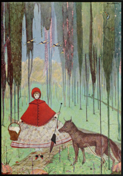
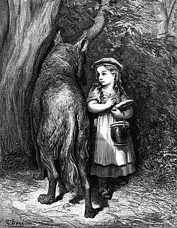
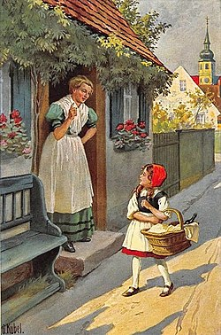

Caperucita Roja es una niña que quería mucho a su abuela; un día su madre le da una cesta con comida para que se la lleve a la abuela, que está enferma y vive en una casa algo lejos de ellas.

En el camino se encuentra con el Lobo Feroz que la reta a una carrera hasta la casa de la abuela. El Lobo conoce dos caminos, el largo y el corto; engaña a Caperucita Roja diciéndole que tome el corto y que él tomaría el largo; astutamente, le enseña los caminos al revés y Caperucita Roja, sin saberlo, va por el camino largo.
Así, el Lobo llega antes a casa de la abuela, se hace pasar por Caperucita Roja y pregunta si puede pasar. La abuela le permite pasar, ya que la puerta está abierta; el Lobo Feroz entra y se traga a la abuela de un solo bocado. A continuación, se mete en la cama para esperar a Caperucita Roja. Una vez que Caperucita Roja llega a la casa, el Lobo —que se hace pasar por la abuela— la invita a estar en la cama con él y mantiene con la asombrada protagonista el conocidísimo diálogo.

Caperucita Roja - ¡Abuela, qué brazos más grandes tienes!
Lobo Feroz - Son para abrazarte mejor.
Caperucita Roja - ¡Abuela, qué piernas más grandes tienes!
Lobo Feroz - Son para correr mejor.
Caperucita Roja - ¡Abuela, qué orejas más grandes tienes!
Lobo Feroz - Son para oírte mejor.
Caperucita Roja - ¡Abuela, qué ojos más grandes tienes!
Lobo Feroz - Son para verte mejor.
Caperucita Roja - ¡Abuela, qué dientes más grandes tienes!.
Lobo Feroz - ¡Son para comerte mejor!
El Lobo se lanza a Caperucita y se la come.
Resumen: Caperucita Roja (en francés, Le Petit Chaperon rouge; en alemán, Rotkäppchen) es un cuento de hadas de transmisión oral, difundido por gran parte de Europa, que luego se ha plasmado en diferentes escritos; en primer lugar, por Charles Perrault y más tarde por los hermanos Grimm. El título del cuento proviene de la capa con capucha de color rojo que la joven protagonista lleva siempre puesta. Cuenta la historia de esta jovencita cuando se encuentra en el bosque con el Lobo Feroz y cómo cae en la trampa que le tiende poco después.
